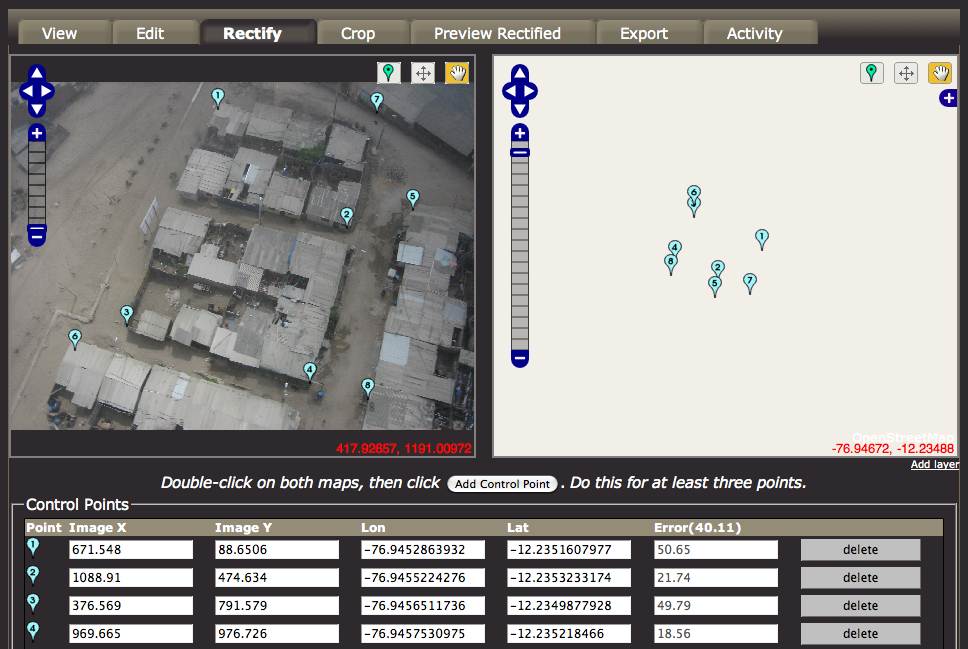
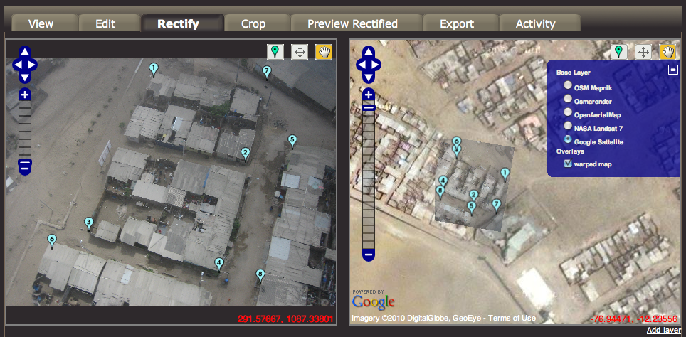
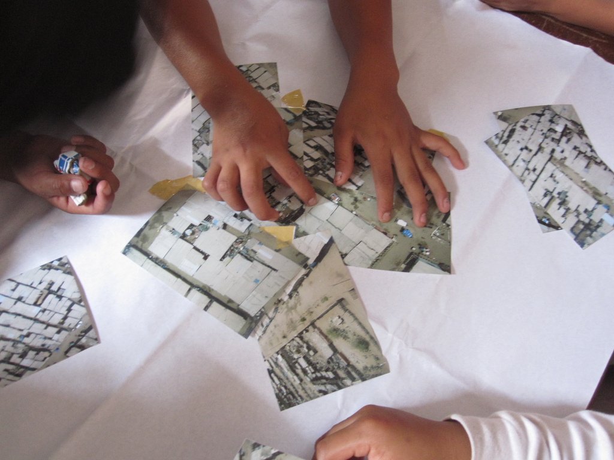

Next: Mapping with San Ignacio
Up: Mapping with Juan Pablo
Previous: Situating mapping practice
Contents
Stitching maps with Juan Pablo II
Throughout the balloon and kite flights, we employed various techniques to process the aerial imagery into maps. Starting with the
Figure 7.7:
The Map Warper interface for identifying Ground Control Points. [58]
| r0.5

|
Map Warper software available at http://warper.geothings.net, teachers from Manzanita `A', we switched to Adobe Photoshop after a few attempts. Designed for printed maps, Warper experienced difficulty successfully warping some of the more oblique or distorted imagery, and in order to compensate, GCPs had to be placed deliberately incorrectly in a laborious trial-and-error process. (See Subsection 6.1.4 for an overview of Map Warper).
Figure 7.8:
Demonstration of JavaScript hack to insert Google satellite data for warping in areas with low feature density. [58]
| r0.5

|
Additionally, Warper uses OpenStreetMap tiles as a base layer, but in Juan Pablo II and other areas we worked in around Lima, there was no data available, and we were forced to use a JavaScript hack to insert Google satellite imagery or another viable source. Even then, it proved difficult to successfully stitch a map, as multiple steps separated an assignment of GCPs with the feedback that an image was successfully warped. This is not to say that Map Warper is not a valued tool for its intended use, and in fact Shekhar Krishnan more recently applied it successfully in digitizing paper maps of Mumbai. However it was not suitable for much of the aerial imagery we gathered, and proved difficult for those with limited computer fluency.
Our next tool was Adobe Photoshop CS4, which can yield impressive results for an experienced user (see GonzoEarth, Subsection 5.3.2). This proved to be a workable alternative, where we used the Distort and Warp tools to align images in separate layers over a base image taken from Google Maps or another source. The total process for stitching 12-15 images took approximately 2-3 hours. Though not a GIS tool, Photoshop has the benefit of being fairly easy to find, though in fact none of the teachers I spoke with had a copy. Still, the use a generalized tool has the benefit of encouraging the learning of generalizable skills, and can result in a more inclusive process. PGIS researcher Peter Poole notes that in order to build a map-making capacity in areas of low computer literacy, `tracing was chosen over digitisation, and simple graphics software over geographic information systems (GIS).' [45]
Figure 7.9:
Students collaborate in a semi-imaginary `rubber sheeting' map stitching session.
| r0.5

|
Most of these tools were inaccessible to the students we worked with, who were either too young or without computer access, however in order to help them understand the process we organized an activity to try to fit together printed images in a kind of puzzle, suggesting that they imagine the images printed `on rubber sheets'. This was so readily understood by all that it inspired the choice of a `rubbersheeting' interface paradigm for the Cartagen Knitter software I developed after the Lima project concluded.
Next: Mapping with San Ignacio
Up: Mapping with Juan Pablo
Previous: Situating mapping practice
Contents
Jeffrey Warren
2010-08-03